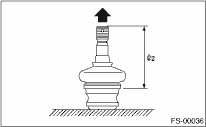

FRONT SUSPENSION > Front Ball Joint
1. Measure the play of the ball joint using the following procedures. Replace with a new part if the play exceeds the specified value.
(1) While applying 686 N (70 kgf, 154 lbf) of force in the direction shown in the figure, measure dimension L1.
(2) While applying 686 N (70 kgf, 154 lbf) of force in the direction shown in the figure, measure dimension L2.

(3) Determine free play using the following formula.
S = L2−L1
(4) Replace with a new part if the play exceeds the specified value.
Front ball joint
Specification for replacement S:
Less than 0.3 mm (0.012 in)
2. If the play is within specification, visually check the dust cover.
3. Remove the ball joint and cover, and check for wear, damage or cracks. If any damage is found, replace the corresponding part.
4. If the dust cover is damaged, replace with a new ball joint.